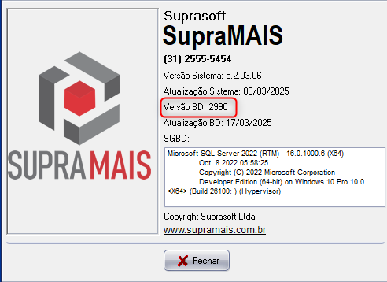
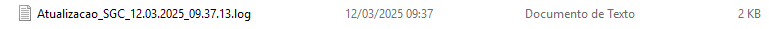
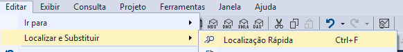
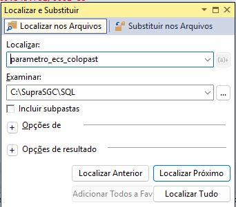
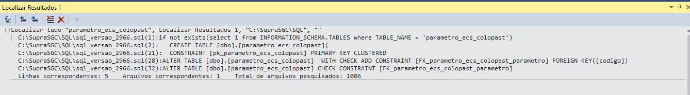

Conceito
- O que é? São os SQL que criam ou removem campos do banco de dados, normalmente numerados sequencialmente.
- Quem cria? São criados pelo Desenvolvimento.
- Como são executados? Através da atualização de versão.
- Onde ficam? Na pasta
SQLdentro da pastaSupraSGC. - Como saber em qual script o banco do cliente está? Acessar o menu Ajuda > Sobre no SupraMAIS.
 Sobre mostrando Versão BD">
Como saber se não rodou algum script de versão no banco de dados
Normalmente é exibido alguma mensagem de erro ao acessar o sistema ou o parâmetro.
Nem todos os scripts que não rodaram dão erro ao acessar o sistema ou parâmetro, pode ser em alguma outra tela especificamente.
Exemplos comuns de erro
- Script que não rodou, mas pode não afetar login/telas
Ex.: Nome de objeto'gera_p1_livros_fiscais'inválido. (erro ao gerar um relatório fiscal) - Erro ao acessar o sistema ou parâmetro
Ex.: Nome de objeto'parametro_ecs_colopast'inválido.
Verificação pela pasta SupraSGC (arquivo TXT)
Para verificar se um script não rodou, acessar a pasta SupraSGC. Lá terá um arquivo TXT conforme exemplo abaixo.

Abrir o arquivo e verificar o script. Antes de rodar manualmente novamente o script, verificar se pode gerar algum efeito colateral. Na dúvida, pergunte.
Localizar um script/campo pelo SQL Server (Localizar nos Arquivos)
Ir no SQL em Localizar e Substituir > Localização Rápida (Ctrl + F).

Na tela de pesquisa, em Localizar coloque o nome do campo que procura e, em Examinar, aponte para a pasta SQL da sua máquina. Depois clique em Localizar Tudo.

Será exibido no resultado todos os scripts contendo este campo. Não necessariamente será o maior número — terá que analisar o caso para entender qual utilizar. Para abrir o script, dê duplo clique sobre o mesmo.

Neste exemplo, o script que criou o parametro_ecs_coloplast é o de número 2966.